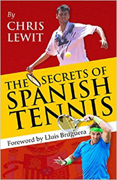

Previous: The Kick Serve - Part 4 - Prehabilitation | 🏠 Classic Lessons Home | Next: The One Hand vs Two Hand Debate
The net game
Comprehensive unified tennis knowledge base — Fundamentals, Stroke Analysis, Reference Library, and more
The Net Game:Macro Perspective
Chris Lewit
In the modern game traditional serve and volley - the way Max Mirnyi played--isn't viable.
My goal in this first article is to present a macro perspective on the net and its current and future tactical applications in the game. In future articles I will explain my technical blueprint for building invincible volleys with my players.
Then we will move on to the swinging volleys and the overhead. Finally we will look at my favorite exercises for developing volley skills and net instincts.
The Overview
In the modern game of professional tennis, players approach the net less frequently than in decades past. Serve and volleyers are rare. Commentators say they are near extinction.
My belief is that the speed of the modern serve and the improvement of the return game has made traditional serve and volley, as a game style, unviable. The serve is actually coming in too fast and the return coming back too fast to allow enough time to get in for a good classic volley play.
A good volley is the basis for complimentary tactical patterns.
Nevertheless, a good volley and overall net game opens up important tactical patterns for players, and they are also critical in doubles. While you generally don't see today's top pro players making high volume net attacks or frequent serve and volley patterns, finishing well at the net is an important part of a complete game, and most of the top pros are very well rounded and can end points at the net reliably.
At the recreational level, the volley is very important and many club players like to come forward to finish points. Many recreational players are also focusing on doubles where the volley is an essential skill. And serve and volley dinosaurs are still roaming the earth at the club level.
At the junior level it's a mixed bag. Some programs and academies are spending a lot of time building good net skills with their players, while in some pockets of the country, juniors are being churned out - to the lament of college coaches - with very little volley ability.
A Tool Not A Gamestyle
I see the modern day volley tactically in singles as a tool to complement baseline weapons, usually a big serve and a forehand. I want my students to understand the volley in this context.
The volley: for my players a complementary tool to baseline weapons.
Going to net is not always a good idea and players need to be judicious when approaching, especially with the quality and spin of passing shots in today's game. When using the volley as a tool I want my players to be responsible and selective.
One of my mentors Jose Higueras says that it's important to be smart when attacking the net. Too often I see players attacking the net haphazardly, carelessly, or overzealously.
I have many players who come to me from other coaches and clubs, and they have been taught that moving forward and taking position at the net is always positive. It's not.
The net can be a wonderful place to finish points, but it can also be a dangerous place where players at very vulnerable. Players both young and old need to understand that the net cuts both ways. It's not like the old days on grass when you could rush in on everything.
Evolution?
While topspin has revolutionized the pro baseline game over the last few decades, with players evolving their technique and swings to develop more spin and racket speed, the technical evolution at the net has been stalled for a long time. I'm waiting for the next evolution of volley technique to arrive.
Could serve and the swinging volley be the next evolution?
It may be possible for the serve and volley style to return if a very agile, athletic big server, like a Lebron-type NBA athlete, can implement the tactic well at the pro level and dominate the net with big serves and athletic net coverage. If the court and ball speeds change, that could also help to encourage net rushers.
However, I can also imagine a future where a new game style emerges - serve and topspin volley. You already see top players like Roger Federer use this on occasion. In this style, the server would halt near midcourt - what we traditionally call “no man's land" - and look to hit winning and transitional topspin volleys from that court position. It would turn the old view of the midcourt - as a place you don't want to be - on its head.
Players would look for topspin volleys from midcourt and if the return was really good, they could still defend and stay in the point. It's less risky than fully rushing the net the old way.
Next: the blueprint for building invincible volleys.

Chris Lewit, former #1 for Cornell and Pro Circuit player, has coached numerous top 10 nationally ranked juniors and is a leading coach, educator, and author. He has written two best-selling books, The Secrets of Spanish Tennis and The Tennis Technique Bible.
Chris runs a popular high performance summer tennis camp in the beautiful mountains of Vermont and coaches players world-wide through his virtual school, CLTA Online (CLTA.teachable.com).
Chris also produces a weekly high performance tennis video talk show and podcast, The Prodigy Maker Show, which is available on Apple Podcasts and all other podcasting directories. All shows can be accessed at ProdigyMaker.com.
Check out Chris's blog, also at ProdigyMaker.com for free articles on high performance junior development and Spanish training. Learn about his camp at ChrisLewit.com or visit the online academy at CLTA.teachable.com

The Secrets of Spanish Tennis
What makes Spanish tennis so unique and successful? What exactly are those Spanish coaches doing so differently to develop superstars like Rafael Nadal and David Ferrer that other systems are not doing? These and other questions are answered in The Secrets of Spanish Tennis, the culmination of five years of study on the Spanish way of training by USTA High Performance Coach Chris Lewit.
Click Here to Order!
Source: tennisplayer.net archive — The Net Game.docx (John Yandell teaching library, 2002-2022). Extracted and rendered as HTML for Tennis Future Lab.